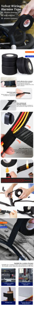

Name: Electrical Tape
Material: flannel
Colour：Black
Product features:
Stable adhesion, temperature resistance 105℃, insulation and cold resistance, can be torn, have a certain degree of wear-resistant and anti-aging ability.
Excellent performance of poly-edge: excellent performance of poly-edge by glass cloth and glass fibre cloth
Stable adhesion, wear-resistant: not easy to peel off the adhesive, the use of adhesive velvet cloth substrate wear-resistant life longer
Tear off no residual glue: coated acrylic system adhesive tear off no glue residue
Automotive engine harness tape: durable and long-lasting tape that effectively protects wires and cables from abrasion, moisture, and other potential damage.
Harness tape: the tape is suitable for the use of wire harness in automobile interior noise reduction part, such as wire harness of the dashboard, main harness wound and applied for wire joint and wire fixing.
